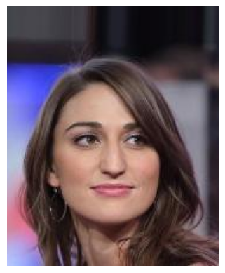
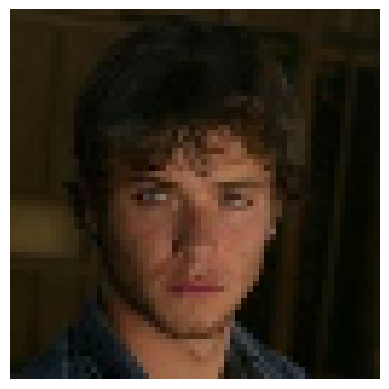
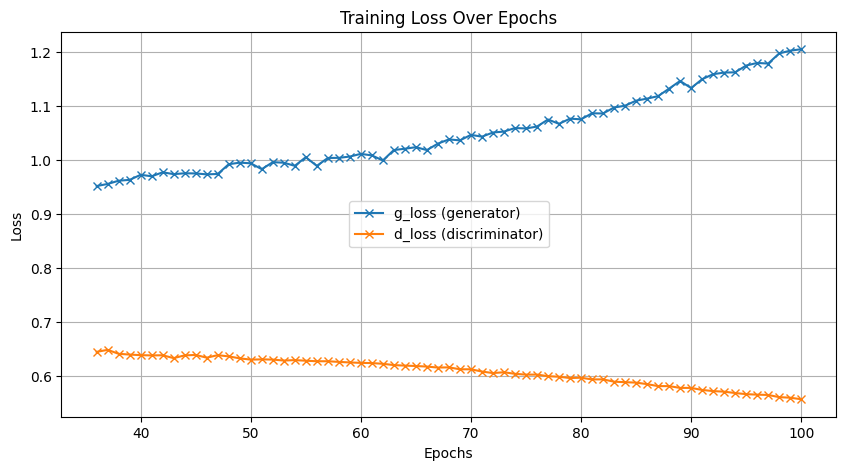

Generative Adversarial Network Generative Adversarial Network
First of all, thank you for visiting and reading this page. If there is anything mentioned wrongly in the upcoming sections, please do not hesitate to correct me! You can find my contact somewhere in the page.
You may refer to my source code here.
Introduction
This page records the takeways from Deep Learning with Python, 2nd Edition (Manning Publications), chapter 12 Generative Deep Learning, section Generative Adversarial Network.The overview of the workflow will be organized in this way.
Generator and discriminator networks setup
GAN model setup
Training and inference
Dataset Downloading and Preprocessing
Before I began hands-on work, I connected my Google Drive to my
Notebook to facilitate file saving and resuming. In this experiment,
I used CelebA dataset as suggested by the book. Once the dataset is
downloaded and unzipped, we can proceed with converting the dataset
into a TensorFlow dataset. This allows all operations to be
performed using Tensorflow. The Keras API provides a function called
keras.utils.image_dataset_from_directory. With this function the images are resized to 64x64 and splitted
into batches of 32 images each. Once this step is done,
normalization is also performed to convert RGB values from range [0,
255] to [0, 1], ensuring better stability and performance.
Below are two sample images from the dataset, with the left ones
shown before image preprocessing and the right ones after. (Left =
Top, Right = Bottom in case you are viewing from mobile devices)


Obviously, we can notice that the image on the right is much more
blurry than the one on the left, as it is resized to 64x64. However,
due to restrictions on computational power, dealing with an image
size of 64x64 didn't seem to be a bad idea.
Generator Network
The generator's role in a GAN is to create fake images that are as realistic as possible. It aims to fool the discriminator into classifying them as real. The generator starts with a random noise vector and slowly transforms it into a realistic image through a series of neural network layers.
Below are the explanation of the generator's architecture.
First we have dense layer. In this layer, the goal is to increase the data's dimensionality to have enough information to form an image. This also sets up the initial structure that will be refined by the next few layers.
This layer reshapes the vector from the dense layer into 3D tensor format, which is normally required for convolutional operations.
We proceed with transposed convolutional layer, or so called
deconvolutional layer. This upsampling increases the spatial
dimensions of the image, adding more and more details from time to
time.
Activation function for these transposed convolutional layer is
LeakyReLU. LeakyReLU is a variation of ReLU. The reason why
LeakyReLU is chosen is that it mitigates the dying reLU problem by
allowing small gradients for negative input. It tries to maintain
all the neurons active.
Above are the comparison between ReLU and LeakyReLU.
This layer produces the final output image.
Discriminator Network
The discriminator's job is to classify whether the data generated from the generator network as either real or fake. Of course, forget to mention, for both networks we all start from an input layer.
Convolutional layers to detect features, such as edges, textures, and other important aspects of the images. Similar to the generator network, we use LeakyReLU as the activation function.
This layer converts the 3D tensor into a 1D vector. This transition is necessary because the next layer, which is the dense layer requires a 1D input.
Dropout layer, a regularization technique. It leaves some neurons 0, or in simple words, deactivates it to prevent overfitting. This forces the network to learn more robust features that are not dependent on some specific neurons.
Lastly we have dense layer with sigmoid activation function. Sigmoid activation function is suitable for binary classfication, which would be the need of our case, as it outputs values between 0 and 1, representing fake and real.
GAN Model Setup
In this section, we have a GAN class that extends the
keras.Model
class. We initialize the GAN class / model with a discriminator, a
generator, and the dimensionality of the latent space. It also
initializes metrics to track the discriminator and decorator losses,
as it is crucial for monitoring the training process and ensuring
both networks are improving over time.
First, we will start with discriminator training. The generator uses
random latent vectors to generate fake images, then these images are
combined with the real ones into a batch. The images are labelled, 0
for the fake ones and 1 for the real ones. To avoid overfitting, we
will have to add some noise to prevent the discriminator from
becoming too confident in its predictions.
Next, as for generator training, new set of different latent vectors
are generated and passed through the generator to create fake
images. The discriminator then will evaluate these generated images,
and the generator's loss based on how well these fake images can
fool the discriminator is calculated.
Both networks' weights are constantly being updated during the
training.
Training and Inference
During the training, Adam Optimzer is applied to both generator and
discriminator networks. Every epoch took about 2~3 minutes with
Google A100 GPU.
I recorded the training losses of both networks from epoch 36 to
100.

From this graph, we can observe that the training of the generator
didn't go well. Starting around the 50th epoch, the loss began
increasing significantly, indicating that the model is performing
poorly. However, the training of the discriminator seems to be
heading in the right direction.
Below are the images generated on certain epochs
Epoch 1
The very first epoch, we can see that the model is trying to generate some so-called "haunted" images.
Epoch 10
We can slowly see some faces are being generated. However the faces are still quite distorted.
Epoch 33
Faces are now generated properly, looks good.
Epoch 50

As the training loss went up, the quality of the generated images become bad instead.
Epoch 100

Finally we reach epoch 100, but no significant improvement is noticed in the generated images.
Epoch 101
Out of curiousity, I trained for one more epoch, and there you go, the generated images look good to me!
RETURN